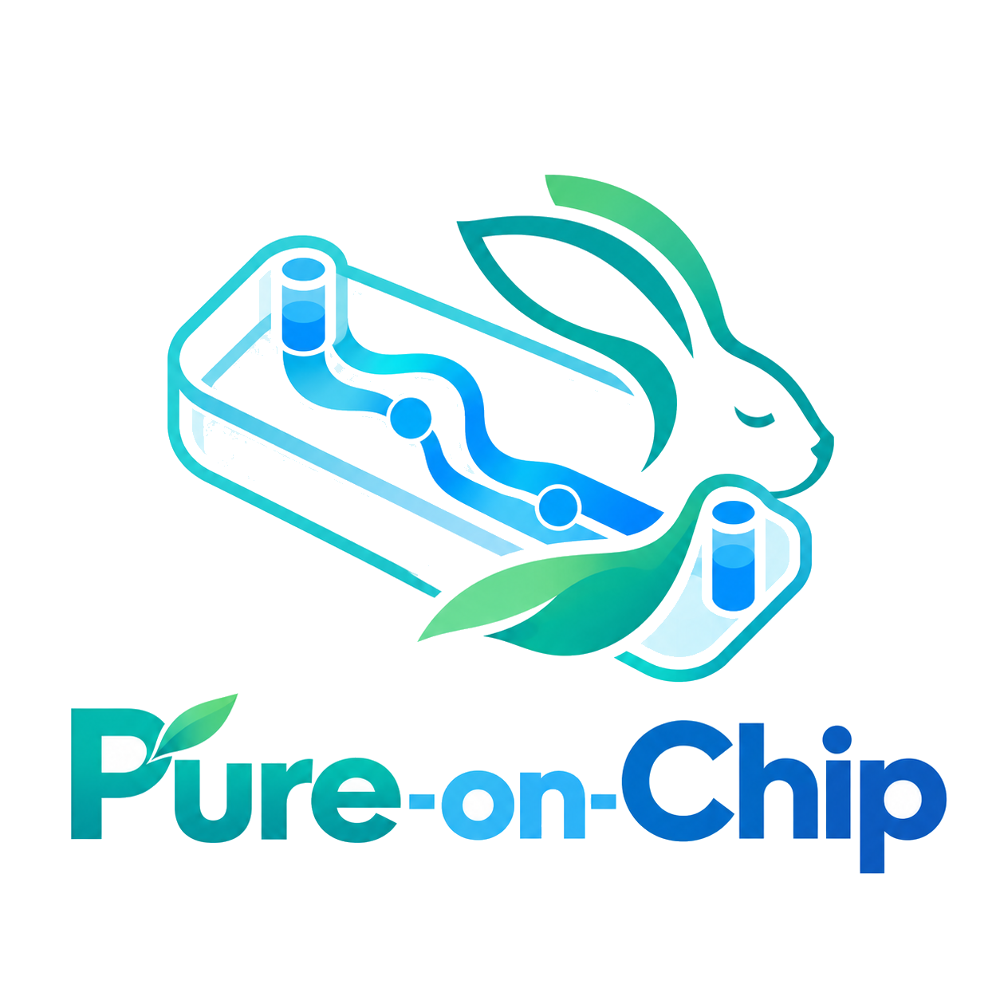
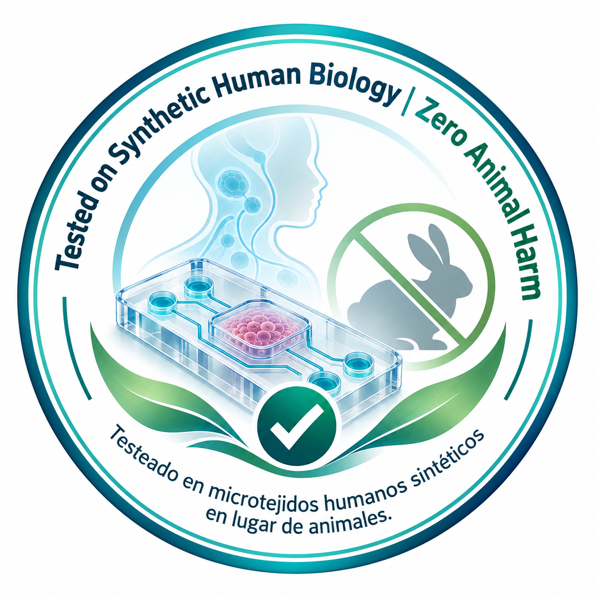

"Beyond the cell"
La CRO de Organ-on-Chip especializada en cosmética. Seguridad humana demostrada, cero daño animal — con microfluídica, biología humana e IA.
PITCH DECK · RONDA SEMILLA 2026 · ← → navegar · Esc vista general
Ayudamos a las empresas cosméticas a evaluar la seguridad y el comportamiento de ingredientes y productos mediante tecnología Organ-on-Chip, sin depender de la experimentación animal.
Microtejidos humanos reales, no cultivos planos ni modelos animales.
Flujo dinámico: vascularización e interfaz aire-líquido, plug-and-play.
Los datos de los chips alimentan modelos de predicción toxicológica.
Con modelos humanos avanzados que permitan desarrollar productos más seguros, éticos y sostenibles, reduciendo progresivamente la dependencia de la experimentación animal.
Combinamos modelos biológicos humanos, microfluídica y análisis avanzado de datos para evaluar la seguridad y el comportamiento de ingredientes y productos cosméticos.
Biotecnología, microfluídica, ingeniería e IA.
Reducir y reemplazar el uso de animales.
Reproducibilidad, trazabilidad y calidad del dato.
Biología humana = resultados representativos.
Menos recursos, residuos e impacto ambiental.
Con empresas, centros, reguladores y ecosistema.
Capacidades, límites y resultados, claros.
Cada ensayo acelera productos más seguros.
⚠️ El gap: la industria debe demostrar seguridad humana sin animales y sin modelos que no predicen la realidad fisiológica. Ese vacío es nuestra oportunidad.
Epidermis, dermis y endotelio vascular bajo flujo continuo. Penetración dérmica, irritación, sensibilización y respuesta inflamatoria con células inmunes vivas.
Epitelio alveolar/bronquial con interfaz aire-líquido para testear toxicidad por inhalación de perfumes, desodorantes y aerosoles.
Detecta si un ingrediente que atraviesa la barrera cutánea genera metabolitos tóxicos en el hígado.
Los datos de los chips alimentan modelos que predicen perfiles de toxicidad antes del ensayo biológico.
Modelo híbrido B2B + B2B2C — el efecto "Intel Inside". Resolvemos el dolor técnico y regulatorio de las marcas, y monetizamos la confianza del consumidor con un sello certificador.

Convertimos un coste técnico de I+D en una herramienta de ventas para la marca.
Panel Dermo-Seguridad (Skin), Aerosoles (Lung) y Toxicidad sistémica (Skin-Liver). El cliente envía la muestra, recibe el informe.
10.000 – 40.000 € / ensayo
Derecho de uso del Trust Mark por SKU + certificado digital de "Animales Salvados".
5.000 – 15.000 € / SKU / año
Suscripción a la base de datos in silico: simula irritación y compatibilidad antes de fabricar.
15.000 – 25.000 € / año
Corporate marco (grandes multinacionales): acuerdos de 50.000 – 150.000 € / año para certificar carteras completas de productos. Cada ensayo enriquece además la base de datos propietaria de IA.
Validación científica
2–3 pilotos con fabricantes locales de ingredientes. Publicación de papers de correlación. Validación del MVP.
Adopción del sello
Entrada en marcas Clean Beauty de venta directa. Campaña del "contador de vidas salvadas".
Efecto red global
Estándar de facto en la UE. Multinacionales obligadas a certificarse por presión del consumidor.
Más marcas usan el sello → más lo reconoce el consumidor → más marcas obligadas a pagar. Un fabricante de hardware puro no puede competir.
Chips integrados sin bombas externas complejas, abaratando costes frente al sistema cerrado de Emulate.
Toda la arquitectura simula la barrera cutánea e interfaz alveolar; Mimetas y TissUse se dispersan en farma.
Cada ensayo mejora los algoritmos de IA; las predicciones in silico son más precisas cada año.
| Segmento | Necesidad principal | Disposición de pago |
|---|---|---|
| 🧴 Fabricantes de materias primas e ingredientes | Certificar que su ingrediente activo es seguro para vendérselo a marcas finales. | Media–Alta |
| 🏢 Multinacionales cosméticas L'Oréal, Unilever, Estée Lauder, Puig, Beiersdorf | Cumplir normativa sin animales, acelerar lanzamientos y alimentar compromisos ESG. | Muy Alta |
| 🌿 Marcas Clean Beauty / vegana | Aval científico indiscutible para justificar precio premium y claims éticos. | Alta (buscan el sello) |
| 💊 CROs farmacéuticas tradicionales | Subcontratan microfluídica compleja que no tienen in-house. | Media (margen compartido) |
| Empresa | Ventaja | Su problema (nuestra oportunidad) |
|---|---|---|
| Beonchip 🇪🇸 | Chips modulares versátiles para investigación. | Generalista de nicho de laboratorio; montaje manual complejo con bombas externas. |
| Emulate Inc. 🇺🇸 | Alta sofisticación biológica, validación regulatoria. | Ecosistema cerrado; su sistema Zoë es prohibitivamente caro — lujo inaccesible. |
| Mimetas 🇳🇱 | Alto cribado con placas multicanal. | Optimizado para farma; fidelidad biomecánica limitada en la barrera cutánea. |
| TissUse 🇩🇪 | Líderes en multiórgano (2–4 órganos). | Muy complejos y lentos para la dinámica rápida de la cosmética. |
Sistema microfluídico simplificado, sin bombas externas complejas. Reduce drásticamente el tiempo de ensayo.
Plataforma modular rentable: grandes multinacionales y marcas medianas pueden adoptar el testeo in vitro avanzado.
Microambientes diseñados para la fisiología exacta de la piel humana. Correlación con clínica muy superior.
🧬 Diferencial: especialistas exclusivos en cosmética + CRO llave en mano + integración piel/pulmón con lectura analítica e IA + el sello certificador B2B2C.
Liderazgo, estrategia y captación de fondos.
Ventas B2B cosmética, ferias y contratos.
Biología celular, iPSCs, inmunología cutánea.
Alianzas estratégicas y ecosistema.
Finanzas, inversión y modelos financieros.
Microfluídica, hardware y perfusión.
Bioinformática y algoritmos predictivos.
Cultivos celulares, fabricación de chips y mesada.
🧭 Consejo asesor: experto/a en regulación cosmética europea (Cosmetics Europe / REACH) + mentor/a de la industria cosmética/dermo.
Horizonte de 18–24 meses. Estrategia mixta capital + financiación pública no dilutiva.
Salarios equipo 2 años · medios de cultivo, iPSCs, anticuerpos, chips · salas blancas BSL-2 y microscopía · patentes del chip y registro del sello · ferias In-Cosmetics / Cosmoprof y branding.
"Beyond the cell"
Buscamos 1,2 M€ para construir el referente europeo en ensayos cosméticos avanzados. Seguridad humana demostrada, cero daño animal. Hablemos.
✉️ contacto@pure-on-chip.com · 🌐 www.pure-on-chip.com